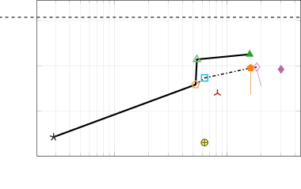
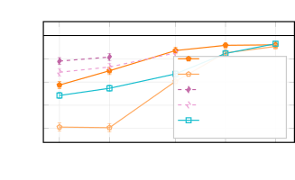

AI 情报｜2026-10-18 ～ 2026-10-25
结论：本期最值得关注的变化，不是单一模型登顶，而是 Agent 的计算与状态管理进入系统协同阶段：低比特 Kernel、投机验证、动态 EP、跨请求状态、硬件后端和权限隔离正在一起影响最终能力与成本。
信息范围为 2026-10-18 至 2026-10-25（含首尾）；采集与核验日期为 2026-10-26，Asia/Shanghai。优先采用事件发生或首次公开日期；仅有来源日历日期时保留该日期，不推断具体时刻。带 UTC 时间的记录同时核对北京时间边界。本期是本站首篇时间段情报，无已发布历史报告可重复；但范围外的旧发布仍不作为当期新事件。
本文的数字分别标明作者/厂商报告、社区实验、分析推导，不代表 Howie 本地复测。未找到可核验的数据用“未公布 / 本次未确认”，不凭模型名字反推完整配置。来源可在文末逐条访问。
本期摘要
- DeepSeek DeepInfer 首次公开：引擎开放，完整服务层仍有边界。 10 月 20 日初始提交提供 DeepSeek-V4.1-Flash 的优化算子、DSpark、异步调度与 SWA bounded replay，支持 NVIDIA SM100 和华为 Ascend 950；公开范围不等于其完整线上生产系统。S1
- vLLM / SGLang 同期更新，KV、投机解码与 PD 成为主要改进点。 vLLM 0.32.0 于 10 月 18 日发布，SGLang 0.5.22 于 10 月 19 日发布；升级要同时检查精度、状态正确性和 Breaking Changes。S2
- Elastic EP 从长时间停服变成“后台准备＋短暂提交”。 DeepSeek V4 Pro / GB200 的 16→20 GPU 测试中，停顿从 99.62 秒降为 0.82 秒，但整个扩容仍需 92.34 秒，不能称为瞬时扩容。S4
- Humming 让低比特存储与硬件计算格式解耦。 H20 的 DeepSeek-V4.1-Flash 实验以同样 MXFP4 权重改用 W4A8，报告吞吐提高 14%–43%；这既是 Kernel 优化，也是 Activation 精度变化，不是纯同精度替换。S5
- TorchTPU 与 TorchNeuron 降低非 CUDA 后端的接入门槛。 PyTorch 原生 Tensor、Eager、
torch.compile和分布式 API 是共同方向，但高性能仍依赖硬件特定 Kernel、Shape 和 Cache 策略。S6S8 - MiniMax M3.1 Flash 与 Kimi K3.1 Pro 把长上下文、后训练与 Agent 工程绑在一起。 两者都宣传百万 Token 上下文；前者突出速度/价格，后者突出多域联合 RL。Benchmark 必须连同 Harness、推理预算和评测集阅读。S9
- AMD 与 Apple Silicon 优化都指向小批量 Decode 的 Kernel 形状问题。 AMD 的 mono decode 与 DSpark 有可组合的步宽限制；MLX 新 SDPA 路径修补多 Draft 验证的慢路径，另有 6–16 行 FP 量化 QMV 优化。S11S13
- 主动式 Agent 的新问题是后台预算与权限，不只是模型 IQ。 Claude Duet 的独立云端 VM、审批、凭证代理与隐私分类器，以及 Modal 的会话亲和性，给 Agent Infra 提供可借鉴的系统设计。S15S17
- AI 工厂的瓶颈向电力、交付与可观测性扩展。 Google A5X / Rubin、DSX POD、Minerva 和哈萨克斯坦的算力计划需要区分宣布、试用、建造、正式 GA 和未来容量。S18S20S22
- KV-Surgeon 值得阅读与小规模复现。 它针对固定上下文的离线 KV 压缩，联合考虑删除和补偿；50× 压缩不是 50× 端到端加速，也不是无损。S23
01｜DeepSeek DeepInfer：什么真的开源了？
事件｜2026-10-20；P0。 仓库初始提交 d585e654 日期为 10 月 20 日，公开 README 支持 DeepSeek-V4.1-Flash，采用 Apache-2.0。仓库创建时间更早，不能用 created_at 冒充公开发布时间。模型本身的 Flash-1017 更新发生在 10 月 17 日，不作为本期新模型发布；本期新增是推理引擎。S1
技术解读。 开源路径包括 Attention DP / balanced CP、MoE EP＋EPLB、DSpark、confidence-scheduled verification、异步 CPU 调度与设备执行重叠，以及批次不变推理。Kernel 来自 FlashMLA、DeepGEMM、DeepEP、TileKernels、DeepSelect 和 TileLang，重点是它们如何组合成模型执行路径，而不是独立算子清单。
- DSpark / 动态验证： Draft 提出多个候选 Token，再由目标模型验证。默认最大 Draft 长度为 5；置信度调度决定验证工作如何安排。最终速度由接受率、目标验证代价、Draft 代价和调度开销共同决定，不能仅凭候选长度推算。
- SWA bounded replay： README 给出 V4.1 的默认保留后缀 140 Token，并要求覆盖 SWA Window＋最大回退长度。这是模型特定的 Decoder Prefill 工作减少方案，不是“所有历史只需要 140 Token”，也不能泛化成任意 Transformer 的 KV 截断。
- 正确性： Batch-invariant 选项仅标明 NVIDIA 支持。确定性采样还要求关闭 variable-length MTP、固定
seq_seed，并且输入 Token 与采样参数相同。不要把“设一个随机 Seed”当作跨批次完全一致的充分条件。
公开版与线上系统的边界。
| 维度 | 初始 README 的可核验信息 | 工程含义 |
|---|---|---|
| Hardware | NVIDIA SM100、Ascend 950 | 不是所有 CUDA GPU / 昇腾芯片通用 |
| Runtime | Linux、GCC≥13、Python 3.12；CUDA 13 / CANN 9.2 | 需要匹配工具链和平台 |
| 能力 | 离线推理、优化 Kernel、模型/Sampler Runtime、调度/并行 | 可以研究核心执行系统 |
| 未包含 | 完整服务所需 KV Cache 系统、VE/Prefill/Decode 分离、跨 DP Replica 的负载均衡 | 不能直接等同可部署的线上 API 服务 |
| Benchmark | Prefill 为 4 张 SM100，Decode 为 64 张，同一 Scale-up Domain 内 | 图中性能不代表单卡或跨普通 Ethernet 网络 |
为什么值得关注。 同一模型执行系统同时面向 Blackwell 与 Ascend，是研究 Kernel、并行与 Runtime 边界的实际代码入口；但不能据此认定二者性能或 API 成熟度相等。社区所转述的每天 Token、营收、Margin、SSD KV 等数字，没有在本期核验的初始 README 中形成完整可重现链，因此不作为本报告的公开版测量结果。
对 Howie 的用处 / 判断。 应读初始 Commit 和执行/调度代码，先比较 attention worker、EP 通信、SWA 回放和验证的时序，再设计硬件具备时的复测。优先回答“哪些优化来自模型结构，哪些来自 Kernel，哪些必须靠未开放服务层”；不要直接尝试用 Mac 或普通消费级 GPU复现其集群曲线。
来源： DeepInfer 初始 README 与固定 Commit。
02｜vLLM 0.32.0 与 SGLang 0.5.22：升级收益与代价一起看
事件｜vLLM：2026-10-18 06:50 UTC；SGLang：2026-10-19 02:55 UTC；P1。 Release 是当期事件；其中单个 PR 可能早已合并，本文不把所有功能都描述为本周才发明。S2
vLLM 技术变化。 低精度 KV 扩大到更多 GPU 路径，Model Runner V2 增加 GPU n-gram Draft、Elastic EP 和 MLA 的 Prefill Context Parallelism＋PP；多模态共享内存 Tensor Arena 减少 Worker 广播复制，Kernel 下载/Autotune 预加载降低冷启动准备成本。
| Release 中的报告 | 收益 | 必须同时看的条件/代价 |
|---|---|---|
| GLM-5.x / SM100 默认 FP8 KV | 每 Rank KV 内存约减半；吞吐＋2.3%–5.5% | TTFT 增加 7%–11%；不能只报吞吐 |
SM90 的 fp8_ds_mla / GLM-5.3-Flash |
输出吞吐最高＋31% | 模型和 Kernel 特定；不是所有 Attention |
| API Server 多 Worker 最低负载路由 | 请求/s＋43%–85% | Qwen3-0.6B、32 输入 / 1 输出；不能推为长上下文 LLM 倍增 |
| HiSparse Request Residency / B200 | 最高＋58%吞吐 | GLM-5.3-NVFP4、长上下文、KV 全驻 GPU、高并发 |
SGLang 技术变化。 Release 报告 DeepSeek-V4.1 在 H200 的每 GPU 吞吐最高 2.3×，MI350X/MI355X 的 DSpark 最高 1.9×；PD 长 Prompt 工作负载最高＋27%吞吐、p95 TTFT 约减半；HiSparse 与 EAGLE/MTP 组合支持 CPU KV Tier；GLM-5.3 的 DCP＋MTP最高 2.1× Decode。完整硬件/长度配置应再进入对应 PR，而不是跨行将这些最高值直接比较。
正确性与兼容性。 SGLang 修复混合线性模型在 speculative decoding＋structured output 组合下恢复错误 Mamba State 的问题。这个修复比小幅速度提升更应该进入上线回归集。两版均要求 Python 3.11 起；vLLM 还调整 Transformers/Tokenizers 范围、CORS 默认值、Responses 推理事件名，移除部分旧 Attention / Cache 选项。
对 Howie 的用处 / 判断。 按现有模型逐项测试 FP8/FP4 KV、Draft Accept/Reject、JSON Grammar、State 回滚、Prefix 命中和多轮工具调用。至少同时测 TTFT、TPOT、Goodput、Peak Memory；高并发吞吐曲线不能代替低并发交互体验。SGLang 本次新增 Apple Silicon 的标准 PyTorch 路径，但后端能运行不意味着它替代 MLX 的性能路径。
来源： vLLM Release、SGLang Release。
03｜Elastic EP：0.82 秒停顿不等于 0.82 秒扩容
事件｜2026-10-19；P1；「延续此前事件」。 Elastic EP 之前已经存在，本次新增是异步准备、NIXL EP 原地成员变更与保留现有 CUDA Graph 的组合，把服务关键路径停顿移出绝大多数准备阶段。S4
技术解读。 原流程停 Scheduler 后创建 Worker/通信组、传权重、Warmup/Graph Capture；新流程分为：
- 后台 Prepare： 旧 Worker 继续服务，新 Worker 接收权重并准备执行；NIXL 接入新 Peer，但先不激活。
- 短 Commit： 暂停 Scheduler，更新设备侧 active membership 和映射，激活新拓扑。
- 后台 EPLB： 重分布 Expert；Graph-visible Buffer、参数地址与布局保持稳定，不必重捕获旧 Worker 的 Graph。
原地更换 Tensor 内容与重新分配 Tensor 地址不是一回事：CUDA Graph记录的指针必须有效。这个约束是它比“把初始化放后台线程”更难的核心原因。
| DeepSeek V4 Pro / GB200，TP=1，DP/EP=16↔20 | Blocking | Async Preparation | Async＋Graph Reuse |
|---|---|---|---|
| 16→20 停顿 | 99.62 s | 58.04 s | 0.82 s |
| 20→16 停顿 | 56.25 s | 44.07 s | 1.96 s |
| 16→20 全过程 | 99.72 s | 97.27 s | 92.34 s |
| 20→16 全过程 | 56.21 s | 51.46 s | 9.32 s |
测试使用预下载 safetensors、共享 Lustre、已热的 Kernel 编译 Cache。11,391 请求回放中，扩容版满足滚动 p95 TTFT＜5秒；失败请求在图里计 30秒惩罚，不是实际测得的 30秒 TTFT。
判断。 工程价值是在线容量变化不再必然等于 SLA Breach；短期还要提前约 92秒启动扩容准备，不能等过载后把新容量视为立即到位。跨拓扑部署、冷 Cache、真实模型文件读取和编排器集成仍需验证。
对 Howie 的用处。 关注 graph-stable workspace、通信组的动态成员、Expert Mapping 更新与服务 Admission。复测需分别统计准备耗时、停顿、p95/p99、失败率和扩容后稳态，不只报 scale() 返回时间。
来源： vLLM Elastic EP 技术文章。
04｜Humming：Hopper 也能受益于 MXFP4，但不是原生 FP4 算术
事件｜2026-10-21；P1。 Ant Group 与 vLLM 社区发表 Humming 的开放技术介绍；仓库与 vLLM 集成早于本期，不能称为此前从未存在的 Kernel。S5
技术解读。 Humming 把权重量化描述、硬件计算配置与 Tile/流水线调优分开：Format/Scale/Zero Point 统一表示，再针对 M、GEMM 类型、设备资源选择 cp.async / TMA、MMA / UMMA、Warp Specialization、Stream-K 等路径。低比特权重解包、Scale 和 GEMM 尽可能在同一 Kernel 内完成。
在缺少原生 MXFP4 Tensor Core 的 Hopper 上，MXFP4 文件存储 → Kernel 内反量化为支持的 INT8/FP8 → Tensor Core计算。减少的是 HBM 权重流量；计算格式并没有变成芯片不支持的 FP4。小 M 更容易受益于搬运，大 M 则还要看反量化与计算流水线是否占瓶颈。
性能 / 数据。 下表来自作者测试：8×H20、TP=8、DeepSeek-V4.1-Flash、权重同为 MXFP4；Marlin W4A16 使用 BF16 Activation，Humming W4A8 使用 Tokenwise FP8 Activation。正文未给出这张 Serving 表的完整输入/输出长度和全套运行版本，不能把它当成已完整复现的跨平台排名。
| 并发 | Marlin→Humming 输出 tok/s | Mean TTFT | Mean TPOT | 输出吞吐变化 |
|---|---|---|---|---|
| 1 | 88.30→100.77 | 543.13→383.80 ms | 9.24→8.46 ms | ＋14.1% |
| 8 | 287.04→383.04 | 2049.81→1386.91 ms | 19.90→15.49 ms | ＋33.4% |
| 64 | 442.37→633.94 | 5467.35→3882.94 ms | 123.25→85.70 ms | ＋43.3% |
作者另测 H200 / CUDA 13.4 单个 W4A16 Kernel 的无缓存编译：CUTLASS＋NVCC 23.35秒，Humming＋NVCC 1.82秒，NVRTC 1.88秒。这是 Kernel 编译，不是整个模型启动时间，也不能和 Serving 表的版本条件混为一谈。
判断 / 对 Howie 的用处。 值得在现有 Hopper 机器对相同权重、相同请求 Trace 比较；必须再评测 Activation FP8 引入的精度变化。--moe-backend humming 只是入口，不能忽略 Weight Repack、Warmup、编译 Cache 和 Feature Compatibility。文章还描述未在 PTX公开类型中暴露的 Blackwell 低精度能力：属于更高风险/版本敏感实现，不应默认视为官方稳定 ISA Contract。
来源： Humming 技术文章。
05｜TorchTPU / TorchNeuron：框架原生化正在削弱迁移成本
事件｜TorchNeuron 介绍：2026-10-19，公开 Beta 计划自 10-20；TorchTPU / HF 支持：2026-10-20；P1。 Beta / 开源状态与无约束生产成熟度不同。S6S8
技术解读。 过去 PyTorch用户需要适配 Lazy Tensor、PyTorch/XLA，或跨 JAX转换。TorchTPU 把后端边界放进 PyTorch Dispatcher：ATen / torch.Tensor 保留，Compiled 路径由 Dynamo/FX 降到 StableHLO，再交 XLA/PjRT执行；Kernel 层仍可用 Pallas、Tokamax、Helion。所谓 Native 不是“去掉 XLA、自动得到 CUDA 同样的 Kernel”。
Eager 三种模式： Strict 为逐 ATen 异步执行；Debug 同步便于定位；DeferAndFuse 累积一段算子，到 .item() / .to("cpu") 等 Materialization Point 构图、缓存、编译与融合。官方称部分场景比 Strict快50%以上并降低中间 HBM，但频繁 CPU读取可能打碎融合。
| 维度 | TorchTPU 官方披露 | 应如何解释 |
|---|---|---|
| 算子/模型覆盖 | 约450 ATen Ops；4,917模型 Smoke 通过4,821（98%） | Smoke Pass不等于任务精度/性能全部通过 |
| 数值评测 | 657代表模型中638（97%）满足论文/文章定义阈值 | 不是逐 Element完全相同 |
| 原生模型示例 | Muse Glimmer 30B、1×TPUv7、5120长度 Prefill约25.7k TPS，59% MFU | Prefill不是 Decode；1个Chip暴露2个TensorCore Device |
| 集群训练 | Qwen3 MoE235B、BF16，局部Batch16、Seq4096，1024→8192 Chips | 全局Batch随设备增加，是Weak Scaling |
| 训练扩展 | 每TensorCore 2236→2104 TPS；MFU28.8%→27.1% | 不能称固定Batch的8倍Strong Scaling |
Google同时报告4芯片AgentX最低成本0.83美分/百万Token、8K/1K最低2.01美分；这些是作者引用的特定Pareto运行点，不是Google Cloud通用零售价。其引用的SemiAnalysis原始外部评测为9月7日，本期不把那篇文章重报为新评测；正式采购仍需完整TCO、输入/输出口径、SLO和并行配置。S6
TorchNeuron。 HF文章称Trainium新后端支持Eager、torch.compile、DTensor/FSDP2，100个常用Text-generation架构支持率从Optimum Neuron 0.4.5的46%提高到89%。示例仍推荐Static KV Cache与固定Chunk避免反复编译。框架接入更顺滑，不等于动态Shape开销消失。
判断 / 对 Howie 的用处。 非CUDA算力竞争不仅是TOPS/价格，更是模型Day-0、Profiler、分布式API、量化与Serving Feature能否复用。建议用同一个模型/Trace分开测“能跑、正确、低延迟、规模效率”，包含编译时间和缓存重用，尤其关注多Agent长前缀与训练/采样共置限制。
来源： PyTorch TorchTPU、HF TorchTPU、HF TorchNeuron。
06｜MiniMax M3.1 Flash：速度和价格必须绑着条件阅读
事件｜2026-10-19；P1。 官方首页给出该发布文章日期；官方发布文称API、M Plan、MiniMax Code已可用，权重“later”，未提供确定上线日期。本报告不把二手来源所谓10月23日权重开放当已确认事实。S9
技术解读。 MiniMax强调更激进稀疏化、可调Thinking与长Agent任务；AMD技术文进一步披露百万Token Context、128 routed experts / Top-4＋Shared Expert、前三层Dense、128-token KV Block Indexer及5层DSpark Draft。精度为 routed experts NVFP4、部分Projection/Shared Expert等MXFP8，而非全模型4-bit。这些配置来自AMD实现说明，不是本报告独立遍历所有权重得出的结果。S11
| 项目 | 官方报告 | 缺失/边界 |
|---|---|---|
| API价格 / 百万Token | Input $0.15；Output $0.60；Cached Input $0.015 | 是10-26核验的发布文价格，不保证长期不变 |
| 在线速度 | P50 170+ TPS，部分200+ TPS | 未披露完整Hardware、Batch、Context、服务负载；不是本地基准 |
| Agent成本 | 相比前代低70% | Task Token数、Thinking预算、成功率也影响总成本 |
| DeepSWE v1.1 | 73.7% | 官方报告；不能直接和SWE-bench Verified比较 |
| OSWorld V2 / ALE | 61.7 / 29.6 | 必须固定评测版本和Harness |
| BankerToolBench / CyberGym | 76.2 / 82% | 不代表跨所有真实工作/安全场景的保证 |
分析。 稀疏Attention可以减少选中Block的读写/乘加，但Indexer本身可能仍随候选Block数量增长；KV存储也不因只Attend Top-k就自动成为常数。官方/实现文“Decode Attention不随Context增长”需要分解为选择、读取、计算和容量四个成本。
对 Howie 的用处 / 判断。 把它作为低价长Session Agent候选，测任务成功率、输出Token膨胀、Cache账单、长文检索与Multi-turn Tool Call。完整Parameter/Active Count、Layers、Hidden和KV Heads在本次已读发布文中未确认，不填二手428B配置；待固定Checkpoint可用后再准确Sizing。
07｜AMD MiniMax Day-0：Megakernel与投机解码有组合上限
事件｜2026-10-22；P1；「延续此前事件」。 本期在M3.1 Flash发布之后新增AMD部署/量化/Kernel配方，不重复上节模型发布。S11
技术解读。 Quark把NVFP4 Expert转换为MI350原生MXFP4计算格式，Shard-by-shard处理，避免整模型同时驻CPU RAM。其余原精度层保留，或按所选运行配方重做Per-channel FP8。NVFP4与MXFP4不是同一种Scale格式，“都4-bit”不能直接逐Byte替换。
Mono Decode。 一个FlyDSL Kernel融合每个Sparse MoE Layer的QKV、QK Norm/RoPE、KV/Index写入、Block选择、Sparse Attention、Projection、TP All-reduce、RMSNorm/Router和MoE。目标是减少约1200个Small Kernel Launch，而不是凭空减少模型层数。
关键限制： vLLM Mono只处理纯Decode、最多16行的完整Decode Graph。若每Request验证K+1行，4并发×(3Draft＋1)恰好16；继续加并发或Draft将跨阈值Fallback。Spec接受率高也可能因为验证形状跨阈值而变慢。
| 作者实验 | 收益 | 条件 |
|---|---|---|
| Mono TPOT，1 / 4 / 16 Requests | 低3.2× / 2.1× / 1.5× | 1k输入/64输出；同一Server Mono on/off |
| Mono输出吞吐，1 / 4 / 16 | ＋178% / ＋82% / ＋31% | 默认随机Prompt 8k输入/1k输出；不同于上行 |
| Coding Trace，1–4 Agents | Interactivity 2.4× | 100k+ Context、每点1小时AIPerf回放 |
| 在Mono上加DSpark K=3 | 1–4 Agents再＋30%–33% | 验证仍在16行范围内 |
| 16 Agents再加K=2 | 比Mono单独低9% | 组合不总是正收益 |
vLLM测试为4张MI350X，ROCm7.2、PyTorch2.13、Triton3.8、AITER0.1.25、FlyDSL0.3.4；ATOM测试为4张MI355X开发环境。两套不能不加说明直接横比。文章使用“CUDA Graph”命名，是框架跨后端Graph抽象/术语，不意味着AMD在运行NVIDIA CUDA。
准确性。 作者在GSM8K全1319题、AIME mean@16、MMMU-Pro测量不同精度配方；“Within Error”不是Logit Bitwise相等。ATOM速度优先可把Shared Expert再量化成MXFP4，需单独识别，不能沿用“只转换Routed Expert”的准确性说法。
对 Howie 的用处。 很适合研究Draft长度×Batch×Context的离散性能断点；测试矩阵必须记录Verify行数、Fallback日志与实际Kernel Dispatch。1M Context支持与Recipe最大131072不同，Capacity和Index Cache不能忽略。
08｜Kimi K3.1 Pro：主要增量在后训练与Agent系统
事件｜官方Blog索引日期2026-10-24；P1。 有二手稿标10-23，本文采用官方索引/页面更新日期10-24并保留日期差异；两者均在本期范围。官方称产品/API已可用，完整权重承诺11月4日前，不能写为本期已经可下载。S10
技术解读。 K3.1 Pro为K3的Post-trained版本，增加联合RL计算，覆盖数百Downstream Domain。披露的系统改进包括RL Framework、Long-context Inference、Training Efficiency、Sandbox、Rollout Scheduler、环境质量检查。不能把改进自动归因于新Attention架构。
官方使用“3T-class”而非发布完整配置；本文不将二手“2.8T/104B”当作已审计参数数。Context为100万Token。Highspeed官方称2–3×速度，但未提供本文可对齐的Hardware/Batch/Context与绝对TPS。
| 官方评测 | 结果 | 口径提醒 |
|---|---|---|
| Terminal-Bench 4.0 | Kimi65.7%；Opus5.5 66.4%；GPT-6 Astra58.2% | Kimi使用Claude-Code Harness；对手值取Blog/榜单已报最大值，不是统一重跑 |
| 内部Kimi Code Bench3.0 Long-horizon | 55.95%→61.2% | ＋5.25个百分点；内部评测 |
| BenchCAD With Tools | 92.7% | Open Model用1000例随机Subset、工具/Harness影响结果 |
| 内部Hallu Bench Hard | Claim-level 23.4%→8.3% | 压力测试，不代表普通API日常错误率 |
| 内部xdev-Bench-hard | 风险控制前90.5%→最终81.0% pass@3 | 无Hard Timeout/Output Limit；不是CyberGym分数 |
分析 / 判断。 百万Context和长任务能力真正需要的是状态寿命、Context Compaction、环境评估与训练样本正确性。模型演示本身无法拆出每个系统模块的因果贡献。低Cyber评测结果也不代表没有风险，通用Coding与Debug能力仍可迁移。
对 Howie 的用处。 先用Kimi API/Kimi Code评测同一Repo任务的成功率、总Token、Sandbox时间、最终可验证结果与失败回退；待权重开放后再看自托管Memory与低比特方案。不要把“能力接近”写成“所有任务优于”或把Highspeed当无代价2–3×。
来源： Kimi官方技术Blog、官方Blog索引。
09｜Apple Silicon / MLX：多Draft验证与小批量量化的性能断点
事件｜2026-10-22～25合并；P1。 本期MLX无新正式Release可确认；最新v0.32.4日期10-14，在范围外。以下为当期合并代码，不能写成pip稳定版已经包含。S12S14
SDPA中间行数：Draft越多并不总越快
PR #4723于10-18 19:15 UTC创建、10-25合并。旧Vector快速路径要求Query Token≤8且Token×每KVHead对应的QHead≤32；超过条件可能落慢路径。新NAX/pre-NAX Split Kernel覆盖≤8Token、33–128行。
| PR作者测量：Qwen2.5-7B 4-bit＋0.5B Draft，32k Code Prompt，M5 Max | Stock | Branch |
|---|---|---|
| 无Draft | 77 | 79 |
| 3 Draft | 86 | 87 |
| 5 Draft | 54 | 119 |
| 7 Draft | 55 | 110 |
表值为生成tok/s。不能只挑54→119写“整体2.2×”：各自调优后Stock最佳85.5、Branch最佳118.6，即1.39×。16k下仅1.02×；M4 Pro 32k约1.16×。Target/Drafter、长度与验证Kernel共同决定最优Draft数。S12
FP量化QMV：多个Token共享一次权重读取
「延续此前事件」。 #4712于10-16创建、本期10-22合并，新增M1–M4的8×8 Simdgroup Matrix和NAX路径，针对6–16行减少逐行重读以及32行Tile Padding浪费。M5 Max、Qwen3.8-27B、Prompt512/Generation128：NVFP4 Batch16总吞吐149.5→298.4 tok/s（2.00×），MXFP4同Batch149.7→313.6（2.10×）；Batch1无变化。S13
SWA与大偏移正确性
PR #4734于10-23合并，为fast::sdpa加入SWA、Vector/Matrix Kernel、Tests/Fallback；作者仅写“Benchmarks to follow”，本期不能填加速数字。S14 PR #4738修复CUDA gather_qmm超过2³² Weight Elements时的Offset计算；2700个640×2560、4-bit Experts在RTX5060Ti/CUDA13.3复现。它说明“大Expert Tensor”的64-bit Address Arithmetic是正确性条件，不只是Kernel调参。S28
对 Howie 的用处。 合并Commit固定后做Draft长度×Q/KV Head Ratio×Context测试，同时测Batch总吞吐与单User TPOT。SWA需要检查Window包含当前Token与Sink语义是否对应上层模型，Kernel加入SWA不自动保证模型配置正确。
来源： #4723、#4712、#4734、Release日期、#4738。
10｜Claude Duet与Claude on Google Cloud：Agent是持续运行的系统
事件｜Duet研究预览10-21，安全说明10-23；Claude平台Google Cloud接入10-22；P1。 Duet起步为美国Pro/Max Waitlist，非全球GA。S15S29
技术解读。 Duet基于Opus5.5，独立App/Web，共享Claude账户Memory、Skills、Connected Apps与Usage Limits。它有云端VM和Browser，用户关电脑不终止工作；每隔几小时查看Connected Account，晨间Brief与后台动作消耗订阅额度。“一直运行”不是“无上限每秒轮询”。
安全不是一个System Prompt。 10-23说明将Browser、Agent工作机、凭证处理与检查分离：真实Token通过外部Proxy注入请求，工作机只有Placeholder；重要动作展示Destination/Content/Recipients，用户审批；独立Intent Classifier与Sensitive-data Classifier在执行模型外检查。
- 发送、支付、签名、删除前需审批；部分金融转账/证券行为即使批准仍禁止。
- 断开App只停止新访问，已学习信息仍可能在Memory中，需重置才能删除这部分上下文。
- 隔离令秘密不进入模型上下文，但并不保证Prompt Injection、不当Destination或审批疲劳完全消失；官方承认Classifier会误报/漏报。
Google Cloud渠道。 Claude Models on Google Cloud（Anthropic managed）把Claude Platform能力与Google身份/计费/承诺消费对接，包含Managed Agents Beta、工具、Skills、Caching、Batch等。它不能不加区分等同Vertex上所有模型接口功能完全一致。
对 Howie 的用处 / 判断。 Agent能力来自模型＋Cloud Runtime＋Connector＋Memory＋Permission Gate。若做Personal Agent，把Background Budget、Task状态恢复、Sensitive Data Flow、Credential Proxy作为一级设计；未核验的外部内容不能成为用户授权。
来源： Duet发布、安全说明、Google Cloud平台接入。
11｜Modal Sticky Sessions：Serverless不能一直假设请求无状态
事件｜2026-10-20；P1。 Modal介绍强Session→Container亲和性，针对Voice Agent、Streaming Decoder、多人房间等需要重连后返回同一进程的负载。S17
机制。 Session Token含签名与Routing Metadata；Proxy验证Token后路由，Host是Session状态Authority；LB定期探测并发Capacity，Autoscaler按Active/Queued Sessions而非原始Request数伸缩。每个Session可以跨多个客户端共享内存状态。
比较。 普通WebSocket只绑定单次连接，断线后新Request可能换容器；Best-effort Affinity允许容器被Scale Down；强Sticky Session保存路由/生命周期，但牺牲自由迁移与负载重平衡。故障容器上的KV/Decoder状态不因签名Token自动持久化。
性能 / 数据。 本文未找到可对齐LLM TTFT/TPOT测量，不能称“已提高X%推理速度”。合理推断的收益是避免Session重连丢失内存状态与重复初始化，需实际Trace验证。
对 Howie 的用处。 Voice/Personal Agent应将Session State、KV Cache Residency与Autoscaling Admission一起设计；试验失败重连、Idle Timeout、热点Session和容器重建，而不只是连续请求时的吞吐。
来源： Modal工程文章。
12｜Rubin / A5X、DSX与Minerva：产能不只取决于GPU数
Google A5X：宣布GA日期，不是当天已经全面GA
事件｜2026-10-21；P1。 NVIDIA标题写“Announce General Availability”，正文明确 GA下个月到来。A5X结合Vera Rubin NVL72、ConnectX-9、Google Virgo网络与第四代液冷；扩到最多960,000 Rubin GPU是未来跨站点计划，不是当前已部署数。Ineffable Intelligence为首个访问客户，研究持续经验驱动RL。S18
分析。 RL的采样、环境、Reward与权重更新形成闭环；Interconnect和CPU/GPU数据路径决定训练/采样切换开销。报告没有统一模型、Batch、Precision、Seq条件下的TPS或MFU，因此不能给出Rubin相对Blackwell的本期实测倍数。客户“多节点工作改为单Instance”也是指定Workflow观察，不是全任务保证。
DSX POD与电力协同
事件｜10-21 Keynote，DSX Power技术文章元数据为10-22 UTC；P1。 DSX POD以合作伙伴模块化预集成/验证降低现场工作；官方称Site Utilities就绪后，从六个月缩到14天。不包括电网审批、供电接入、土地与建设，不能称两周建成完整数据中心。S19
DSX Sim模拟Grid/Facility，Flex协调Grid/Onsite Generation，MaxLPS/Exchange连接Compute/Power/Cooling遥测。官方Phaidra案例称同Power Envelope约多10%Compute；Emerald“可释放100GW”明确是Modelled Potential，不是已新增供电。Keynote的最高30%减功耗也缺少可跨环境比较的完整Benchmark。S20
Minerva：用拓扑关联事件，而不只是显示GPU利用率
事件｜2026-10-22；P1。 Minerva把GPU、SuperNIC、Switch、Cable、Storage、Scheduler、Workload组成Dynamic Knowledge Graph，关联异常，避免海量告警逐一处理。目标指标是GPU Hours、Goodput、Uptime与有效Token产出；孤立Utilization可能掩盖等待、重试、Straggler和无效工作。S21
官方称每小时分析十亿级Data Points，但没有披露标准化Detection Precision/Recall、MTTR基准或闭环自动修复成功率。本期不把“更早发现问题”包装成已量化几倍Reliability。
对 Howie 的用处 / 判断。 Profiler的Kernel时间应向上连到Request/Job与Node/Network/Storage故障；Capacity规划应把供电、编译/初始化、扩容准备、失败/重算纳入。建议指标从Raw tok/s升级到SLO约束下的Goodput/Watt、Goodput/Cost。
来源： A5X、Keynote、DSX Power、Minerva。
13｜端侧与本地模型：Flint、DGX Spark和Cosmos
事件｜10-21本地AI公告，Cosmos新工具10-21当地日期/10-22 UTC元数据；P1/P2。 RTX Spark原硬件10-16发布，在本期之前；本节仅收录后续新品配方/容量和Software新进展，标记「延续此前事件」。S30
Flint。 Recursive官方介绍40B总/2.5B Active MoE，针对本地Coding，称短Context在M4 Pro＞125 tok/s、64GB RTX Spark＞150 tok/s；NVIDIA称其生成Kernel在RTX Spark提高55%，权重不变。CPU/GPU精度、具体长度、Batch和完整代码版本未同时披露，不能当作MLX通用基准，也不能和7B模型的32k表直接排名。官方Repo/权重渠道与Engine成熟度仍应分别测试。S32
DGX Spark。 本期公告64GB系统从10-23伙伴开始Rollout，最多8台可手工组Cluster；“1TB统一内存”对应8台128GB聚合容量，不是8台64GB，也不是单GPU平坦共享HBM。跨机器模型必须支付网络通信；容量增加不保证Decode吞吐线性增长。S30
Cosmos。 Data Factory新增五类Blueprint：Driving数据、Image Attribute、Event Video、Defect Image、Video天气/光照Augmentation；Framework提供后训练、蒸馏、量化和Policy Simulation。官方案例32B Reasoner→8B Nano“无精度损失”，只能理解为该案例验证范围，不是任意数据/任务保证。Synthetic数据改变分布，也可能固化Generator偏差；真实稀有事件Holdout和下游Policy表现才是检验。S31
对 Howie 的用处。 本地Agent实验优先保留足够KV空间，测RAM/VRAM、网络、长Context TPOT而不只短Context峰值；VLM Data Factory可用于事件增强，但必须去重、标注合成来源，并做真实场景验证。
来源： 本地AI更新、Cosmos工具、Recursive Flint。
14｜KV-Surgeon：固定上下文的离线压缩，不是通用无损KV裁剪
事件｜2026-10-19 07:31 UTC，arXiv:2610.25933v1；P1。 Moritz Wagner、Christophe Roux、Max Zimmer、Sebastian Pokutta，ZIB / TU Berlin。以下按原论文主章节顺序概述；数字来自作者实验，代码仓库为ZIB-IOL/KV-Surgeon。S23S33
1. Introduction：删除一个KV会改变所有剩余权重
针对大量请求复用同一Document/Codebase的场景，先Prefill一次，再一次性花预算压缩Cache。单个Head的Q为维度dₖ的向量，T个K组成T×dₖ，V为T×dᵥ；Softmax得到T个权重，再加权得到dᵥ输出。
用最简单例子：Attention权重[0.2, 0.8]，Value[0, 10]，输出8；删掉第一项后，第二项归一化到1，输出10。即使删项Value为0，结果仍变化，因为Softmax分母变化。高Attention条目若Value接近整体输出，也未必不可删除。这说明简单排序不等于最佳组合选择。

原图来源：KV-Surgeon Figure 1，CC BY 4.0。横轴为单Context校准＋压缩Pipeline时间（log），纵轴为QuALITY准确率；Qwen3-30B-A3B完整Context为80.7±0.4%，KV-Surgeon72.5%/159秒，Fast71.4%/54秒。压缩存在准确率损失，图不表示Decode tok/s。
2. Related Work：从独立删除到联合补偿
区别于在线Eviction，离线方法可以用Calibration Query看删除对Attention Output的影响。Cartridges训练Cache，Attention Matching先选Support再Refit；KV-Surgeon让删除后剩余项能补偿多少进入删除决策本身。这样考虑删除之间的耦合，而不是只把同一套分数排一次序。
3. Method：二次代理、Greedy Elimination与Refit
作者构造Attention-output Error的二次Surrogate，在代理上求每个候选删除的最优补偿和损失增量的闭式解；删一个就更新剩余项，再选择下一个，最后Refit保留Cache。闭式最优仅针对该代理/单步补偿，并非原Softmax全局组合问题的精确最优。
固定上下文 → 一次Prefill取得完整KV
→ 收集Calibration Queries
→ 计算候选删除＋最优补偿后的代理误差
→ 删除一项并更新剩余项，循环至预算
→ Refit → 存为可复用Cache → 后续请求复用
4. Experiments：重要的是Cost–Accuracy Frontier
作者在H200机器、单Job SLURM测量；模型4B–30B Dense/MoE，QuALITY、LongHealth、Long Code Arena，5×–100×压缩。主要QA均为五Seed Mean；Pipeline时间包含Calibration＋Compaction，不含共同Prefill、后续Answer Generation和模型级预处理。
| 50×；八组QA Model/Benchmark平均 | 准确率 | Pipeline时间/Context，几何均值 |
|---|---|---|
| Full Context | 74.0% | 不适用 |
| AM-HAK | 62.0% | 138 s |
| AM-OMP | 63.2% | 763 s |
| KV-Surgeon | 65.1% | 145 s |
| KV-Surgeon-fast | 63.9% | 54 s |

原图来源：KV-Surgeon Figure 2，CC BY 4.0。横轴是压缩倍数，纵轴是其他方法相对KV-Surgeon的准确率差（百分点）；误差线为差异的一个标准误。不是不同硬件吞吐对比。
这里是八组均值，不能和原Figure 1单模型72.5%混为一谈。Fast比AM-OMP少约14.1×Pipeline时间；不是最终Serving14.1×。去掉Selection期间补偿，固定Ablation中准确率66.9→63.9%，支持核心改动；改Calibration策略可降低准备成本，但运行场景移出Calibration分布后仍需测质量。
5. Conclusion与我们的判断
实际价值： 长期复用的法规文档、病历、代码库可以把一次压缩成本分摊到很多请求。若Context不断改变或查询分布剧变，重新Calibration/压缩可能抵消收益。
分析推导： 对传统未压缩KV，若层数L、Batch B、KVHeads H、HeadDim D、Context T、每Element s Bytes，则Memory ≈ 2×L×B×H×D×T×s。在固定格式/层Head预算下，50×缓存条目压缩可将该固定Context的主体Payload约降到1/50；还需计Scale/Multiplier/Index、追加生成Token和其他显存，不能说整模型Memory降50×。
对 Howie 的用处。 值得以固定Codebase/RAG问题复测：同等显存预算下Accuracy、总准备时间、复用次数Break-even、Decode HBM Bytes、TTFT/TPOT。以“压缩条目数”冒充“KV量化bit数”、以50×冒充50×加速都不正确。
15｜GitHub与专业社区：热点、榜单与技术质量分开
当期值得测试的热点。
| 项目/讨论 | 当期新信息 | 为什么受到技术关注 | 行动 |
|---|---|---|---|
| DeepInfer | 10-20公开初始Commit | 模型特定集群引擎、SM100/Ascend双后端 | 读固定版本、明确服务层缺口 |
| Humming | 10-21技术发布 | 多Format/Hardware统一量化Kernel | Hopper上做精度＋性能A/B |
| TorchTPU | 10-20开源/生态支持 | PyTorch原生非CUDA后端 | 测编译、Eager和Serving Coverage |
| vLLM / SGLang | 10-18/19 Release | KV、PD、Spec、正确性/安全修复 | 按生产Feature回归后升级 |
| MLX | 10-22～25关键PR合并 | 多Draft Shape、小Batch权重重用、SWA | 固定Commit验证，不冒充Release |
| HF Community MoE Prompt Sorting | 10-19作者实验 | 同域Batch减少Expert集合/权重流量 | 优先离线Batch，不给Online队列增延迟 |
专业社区独立观察。 Abdennacer Badaoui在HF Community报告单MI300X、stock vLLM0.27、768 Prompt、greedy、固定256输出，Qwen3-30B-A3B BF16 Batch32从1949→2286 tok/s（＋17.3%），gpt-oss-120b MXFP4从953→1069（＋12.2%）。本质是同域Token的Expert Route更重叠，更少Distinct Experts被读取，没有改Top-k/模型权重。S34
作者做了Routing Replay与多次Alternating Run，但这仍是社区实验，不是厂商普适保证。Sorting会改变浮点Batch Composition，长输出不保证逐Token完全相同；Online等待排序可能伤害TTFT，Dense/Prefill-heavy或大Batch接近触及全部Experts时收益有限。Embedding Cluster还要扣除前处理成本。
Star飙升榜。 本次未取得覆盖10-18～25的可比Star历史快照，不发布虚构24h/7d/30d增长榜。当前Trending不能反推过去当期热度。可确认Release/Commit日期，但Created/Pushed时间不是增长速度。
总Star Top：仅附当次观察，不算当期新事件。 下表为10-26 GitHub Search查询topic:llm stars:>1000，按Stars降序前五，范围不是“全GitHub所有AI项目”；Topic由仓库维护者标记，结果受接口搜索范围影响。Stars会变化，列表没有技术背书。S35
| Query内排名 | Repository | Total Stars（10-26观察） |
|---|---|---|
| 1 | morluto/rea | 387,652 |
| 2 | affaan-m/ECC | 289,167 |
| 3 | NousResearch/hermes-agent | 257,207 |
| 4 | firecrawl/firecrawl | 195,459 |
| 5 | Significant-Gravitas/AutoGPT | 187,756 |
判断。 榜单仅负责发现候选，进入重点分析还需可运行实现、维护者、License、安全、真实用户/Benchmark和与你的方向匹配。不能以高Star推出“可成为主流”。
来源： HF作者实验、GitHub查询；其他项目见对应章节。
16｜公司与行业：计划、部署、投资与传闻的边界
NVIDIA / Kazakhstan｜10-23；P1。 官方描述Huang访Astana，Firebird获得45,000 Grace Blackwell GPU出口许可，一期与Kazakhtelecom在建、目标2027 Q3商业上线；第二阶段“潜在约500MW”仍是计划。官方称Kazakhtelecom已部署400 H200＋480 B300，并计划下一年新增Rubin等容量。不能把出口许可、意向规模、订单和已交付GPU混计。S22
NVIDIA同时宣布投资Higgsfield；本次来源未公开金额，不能估算为融资总额。此事件代表算力与本土生成媒体产品的联动，但不证明未来供给一定按期交付。
AMD / LeadDesk / QuTwo｜来源日期有10-22列表、10-23正文差异；P2。 合作采用MI350P PCIe＋ROCm，目的为低资源欧洲语言定制、压缩、当地可控部署。本文按10-23正文并注记差异；“Near-frontier”没有统一Benchmark，不作能力数字。QuTwo的Quantum-inspired Compression不是声明模型正在量子芯片上推理。S36
Model Company商业判断（分析）。 MiniMax的低价与Kimi的高预算后训练各代表一种成本/能力定位；只看Price/Token不能判断企业毛利或服务Task成本。需加上成功率、推理长度、Cache折扣、工具时间、重试和可用性。Google托管Claude平台、NVIDIA模型＋Runtime＋硬件一起交付，表明控制面/开发者生态也是竞争变量，不仅是模型Benchmark。
传闻。 检索遇到OpenAI融资与企业折扣等转述，但未取得本期完整的一手/可靠原始报道核验链，不作为确认事实，也不为填满栏目扩写金额。没有足够高质量、可追溯的传闻时，本期省略Rumor正文。
17｜技术趋势判断与下一步
以下为分析，不是各公司的官方结论：
- 从Token快到Task快。 长Context、多轮工具、共享Prefix与后台任务改变了工作负载；Kernel tok/s应与任务成功率/总Tokens/Tool Time/SLO一起评估。
- State Locality正在成为控制面问题。 Elastic EP、Sticky Session、KV Residency与Bounded Replay都要保证拓扑/路由改变后状态仍正确。Compute与Memory“各自优化”越来越难。
- Kernel形状断点影响算法最优点。 MLX 5-Draft慢路径和AMD16行Mono上限都说明接受率模型不足以指导Speculative策略；调度需要感知实际Kernel Dispatch。
- 存储精度与计算精度进一步分离。 MXFP4文件可在不同设备上走不同Activation格式与MMA路径；性能、精度和Memory必须分别记录。
- 非CUDA竞争首先降低迁移成本，再争取规模性能。 TorchTPU/Neuron保留PyTorch上层代码，但不是无需Kernel优化的“万能后端”。
- 主动Agent使安全与后台预算成为产品能力。 可持续执行需要权限、Secrets Isolation、审计、Memory删除语义与恢复机制，而不只是更长Context。
- AI Infra价值从峰值扩到有效产能。 初始化/扩容、供电、失败、网络与Storage Tail决定Useful GPU Hours。更低TPOT不必然更低Cost/Task。
对 Howie 最值得投入的三个工程实验：
- Speculative Shape Map： 在可用Mac上，以MLX固定Commit绘制Draft长度×Q/KVHead Ratio×Context×Batch的Kernel/TPOT热图，解释为什么算法最优K随硬件变。
- Agent Trace Benchmark： 将长Prefix、多轮工具、空闲恢复与子Agent Burst加入现有Serving测量，输出Goodput、p95 TTFT、Task Latency、GPU/KV驻留和成本口径。
- 固定上下文KV压缩： 以Codebase/RAG做KV-Surgeon可用性实验，明确Calibration成本、复用Break-even、准确率损失和Serving获益，避免“条目压缩倍数＝速度倍数”。
18｜覆盖边界、排除项与核验说明
- 未假装全面穷尽。 已检索模型、硬件、Infra、开源、Agent与产业来源；Apple/Qualcomm/Intel/更多国内厂商没有足够核验链的当期新信息，不以“没有发生任何事”下结论。
- 排除范围外内容。 MLX v0.32.4（10-14）、DeepSeek模型1017发布（10-17）、RTX Spark原始硬件发布（10-16）不是本期新发布；仅其本期执行系统/后续功能增量收录。
- Nemotron日期冲突。 10-21 Portfolio文称新模型，但Super VL独立发布与技术文元数据为10-15，因此不把Super VL本体再次写为本期新发布；Portfolio与新工具作为本期更新。
- 论文版本不是自动新闻。 QwenGyre v2为10-20，但v1为9-27；对比已读两个版本的Abstract/核心机制/主数字相同，无法证明本期实质增量，因此不重复详细报道其1.85×数字。Expanding Attention为10-02，排除。S37
- 来源日期与展示日期有差异。 NVIDIA部分文章当地显示10-21而UTC元数据10-22，AMD列表/正文差一天，Kimi二手与官方日期不一致，均已注记；本期包含边界未受影响。
- 当前状态不是历史快照。 发布文章与API价在10-26访问，可能已更新；固定Commit的README/PR保存为证据。未取得10-25前完整可用状态证明时，不追认权重开放日期。
- 外部页面失败已换策略。 超时或渲染异常的页面使用Chrome读取或官方替代入口；不能把访问失败当不存在，也不能把摘要当全文。
- 审核范围。 已按技术事实/数字/日期/版本/Benchmark口径进行准确性审核，修正旧发布、Headline与正文GA差异、开源范围、Serving条件缺失与混合精度；排版检查涵盖移动端、表格横向容器、原图、导航和来源链接。发布后的最终网页验证结果另在任务完成回复说明。
来源
以下按正文编号列出原始来源；官方声明不等于独立实测。GitHub搜索结果为采集时观察，Paper/版本/Commit链接尽可能固定。
- S1 DeepSeek-AI，DeepInfer初始README，2026-10-20：固定Commit。
- S2 vLLM，Release 0.32.0，2026-10-18：Release。
- S3 SGLang，Release 0.5.22，2026-10-19：Release。
- S4 vLLM，Achieving near-zero-downtime scaling in Elastic Expert Parallelism，2026-10-19：原文。
- S5 vLLM / Ant Group，Announcing Humming，2026-10-21：原文。
- S6 PyTorch / TorchTPU Team，Introducing TorchTPU，2026-10-20：原文。
- S7 Hugging Face，TorchTPU: TPUs, Natively，2026-10-20：原文。
- S8 Hugging Face，TorchNeuron，2026-10-19：原文。
- S9 MiniMax，MiniMax M3.1 Flash，2026-10-19：原文。
- S10 Moonshot / Kimi，Kimi K3.1 Pro Tech Blog，官方索引2026-10-24：原文。
- S11 AMD，MiniMax-M3.1 on AMD Instinct GPUs，2026-10-22：原文。
- S12 MLX PR #4723，创建10-18 UTC / 合并10-25：PR。
- S13 MLX PR #4712，创建10-16 / 合并10-22：PR。
- S14 MLX PR #4734，创建10-20 / 合并10-23：PR。
- S15 Anthropic，Introducing Claude Duet，2026-10-21：原文。
- S16 Anthropic，Claude Duet Safety, Privacy, and Security，2026-10-23：原文。
- S17 Modal，Serverless routing made sticky，2026-10-20：原文。
- S18 NVIDIA，Google Cloud Vera Rubin Infrastructure，2026-10-21：原文。
- S19 NVIDIA，GTC Berlin Keynote Live Updates，2026-10-21：原文。
- S20 NVIDIA，How Companies Are Using NVIDIA DSX to Break the Power Bottleneck，2026-10-22 UTC元数据 / 当地10-21：原文。
- S21 NVIDIA，Minerva，2026-10-22：原文。
- S22 NVIDIA，Kazakhstan Expands Compute，访问/会谈10-23：原文。
- S23 Wagner等，KV-Surgeon，arXiv提交2026-10-19：元数据。
- S24 KV-Surgeon v1：论文全文。
- S25 MiniMax官方首页发布列表：日期入口。
- S26 Kimi官方Blog列表：日期入口。
- S27 MLX Releases：正式发布列表。
- S28 MLX PR #4738，创建10-21 / 合并10-23：PR。
- S29 Anthropic，Claude Models on Google Cloud，2026-10-22：原文。
- S30 NVIDIA，Local Intelligence GTC Updates，2026-10-21：原文。
- S31 NVIDIA，Cosmos New Tools，10-21当地/10-22UTC元数据：原文。
- S32 Recursive，Introducing Flint：官方原文；本期日期由NVIDIA10-21公告交叉佐证。
- S33 ZIB-IOL / KV-Surgeon：官方代码。
- S34 Abdennacer Badaoui，Sort your prompts，HF Community，2026-10-19：作者实验。
- S35 GitHub Search，采集2026-10-26：限定Topic查询；非时间范围内历史榜单。
- S36 AMD Silo AI，Sovereign AI for European Customer Conversations，正文10-23：原文。
- S37 QwenGyre，9-27初版 / 10-20修订：版本记录；因新增未确认而排除。
- S38 Expanding Attention，10-02提交：版本记录；范围外排除。